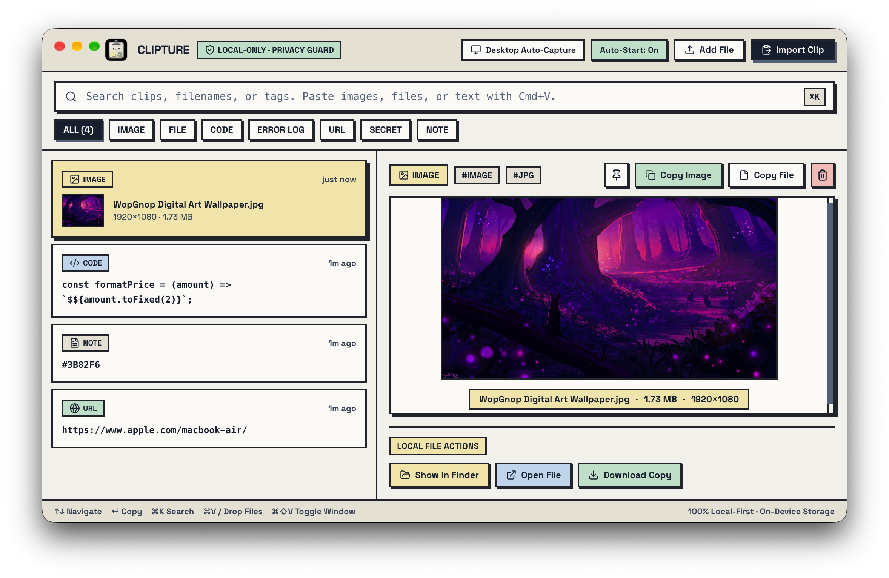

Zero-effort background history
Anything you copy with ⌘C / Ctrl+C—text, code snippets, screenshots, or Finder files—is saved locally and ready whenever you summon Clipture.
The lightweight, privacy-focused clipboard history manager for macOS and Windows. No cloud sync, no telemetry—your secrets never leave your device.
Free & open-source under the MIT License.
Every clip is classified on-device into Code, Error Log, URL, Secret, Image, File, or Note.
Anything you copy with ⌘C / Ctrl+C—text, code snippets, screenshots, or Finder files—is saved locally and ready whenever you summon Clipture.
API keys, tokens, and high-entropy credentials are detected locally and masked by default. Click Reveal only when you need to inspect them.
Paste or drag-and-drop images and files into the window, inspect dimensions and file sizes, reveal in Finder, or copy straight back to your clipboard.
Built with Tauri & Rust for a tiny ~3.9 MB installer, menu bar tray, launch-at-login, shortcut priority toggle, and instant ⌘⇧V window toggling.
A tactile split-pane workspace designed with crisp borders, fast filtering, and zero clutter.

Navigate, search, and paste without touching your mouse.
| Shortcut | Action |
|---|---|
| ↑ / ↓ | Move through clip history |
| ↵ / ⌘C | Copy selected clip to clipboard |
| ⌘X / Win+X | Delete selected clip |
| ⌘K / Win+K | Focus search bar |
| ⌘E / Win+E | Move clip to another clip type |
| ⌘T / Win+T | Create custom clip type |
| ⌘V / Drop | Import text, images, or files |
| ⌘⇧V | Toggle desktop window |
| Esc | Cancel mode or clear search query |